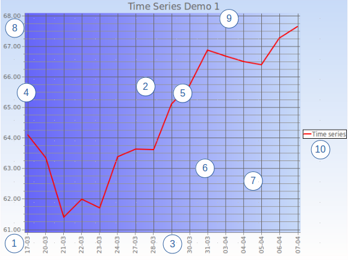

wxFreeChart is a powerful charting library, designed with flexibility in mind.It has a Model-Controller-View (MVC) design and it can draw the following built-in chart types:
- Line and point scatter charts based on XY coordinates
- Bar charts, including stacked and layered bar charts
- Histograms
- Pie charts
- Bubble charts
- OHLC bar and candlestick financial charts
wxFreeChart has advanced features, like: data markers, various data access helper classes, legend, various axis types.
wxFreeChart Concepts
Before starting to use wxFreeChart it is first important to understand some basic terms and concepts. We have tried to stick with normal charting conventions where possible, however it is worth repeating everything here because there may be some subtle differences.
Anatomy of a Simple Chart
The following figure shows a basic line chart drawn using the wxFreeChart demo application.

Let's look at each of the numbered items in turn.
- The whole chart is inserted into a wxSizer as a wxChartPanel widget. A chart panel widget must contain exactly one Chart object. You are responsible for creating the Chart object and assigning it to the wxChartPanel widget. So (1) in the figure represents both the chart panel and the chart. The Chart is a container for either a single Plot object or a MultiPlot object (see 2). In addition to the plot, the Chart object can have a Header (typically the chart title - see 9) and a Footer object. The Chart area has its own background which can be drawn with any of the built-in AreaDraw classes or with a specialised custom area draw.
- Todo:
- Wouldn't it be better if the Chart object was automatically created by the wxChartPanel ctor? Furthermore, is it really necessary to have both wxChartPanel and Chart objects?
- The main area of any wxFreeChart is the Plot area. This is the part of the chart that contains the axis, the gridlines and the plotted data itself. A wxFreeChart chart can consist of one or more Plot objects. To have more than one Plot object, a MultiPlot object must be added to the Chart and plots assigned to its cells. See the MultiPlot class documentation for more details. The type of Plot determines the type of chart that is drawn. For example, to draw a bar chart, a BarPlot is used. The Plot area background can be filled with a different AreaDraw from the Chart background (as in the figure), or the chart background can be allowed to show through by using the included NoAreaDraw class.
- Horizontal Axis. Most wxFreeChart plots have two axes, a horizontal axis and a vertical axis. The horizontal axis can be positioned at either the top or the bottom of a plot. Normally, each plot will have its own axis, however plots within a MultiPlot object can share a common axis if required via the AxisShare class. There are many types of built-in axis within wxFreeChart, including NumberAxis, CategoryAxis, TimeDateAxis and Logarithmic axis. The axis shown in the figure above is a TimeDateAxis. The Axis concept is fully extensible beyond the standard built-in objects. A single Plot can also have multiple Axis when it is desireable to show data having different scales on the same plot.
- Vertical Axis. The vertical axis can be positioned at either the left or right of the plot. As with the horizontal axis, the vertical axis can be shared between plots and there can be multiple axes on a single plot. By default, wxFreeChart will pick a suitable range for the Axis (i.e. max value, min value and interval between values etc.). It is also possible to programatically specify the range for each axis.
- Dataset and data Series. These concepts will be discussed in detail in the next section, but in short the data Series is the actual data that is being depicted on the plot. There are many different types of data Series, some of which are particular to a specific plot type, whilst some of which are generic and can be used across various types of plots. Data Series are rendered to the plot using a Renderer class. Again, the type of Plot will determine what type of Renderer can be used.
- Major gridlines. Gridlines are extensions of the axis to make it easier for the reader to see where the data is actually intersecting the axis. Major gridlines extend the labelled values and are normally drawn in a slightly darker colour. Therefore, gridlines are a property of the Axis. You have complete control over the appearance of the gridlines by defining the wxPen object used for line drawing.
- Minor gridlines interpolate the major gridlines, but are disabled by default (with the exception of LogarithmicNumberAxis. To enable minor gridlines, simply define the number of divisions per Axis interval. In the example above, the horizontal axis has minor gridlines disabled and the vertical axis has 4 divisions lines per Axis interval (i.e. 3 minor gridlines per interval).
- The overlap of the gridline into the Axis label area is referred to as a 'tick'. Despite this description, ticks can be drawn independently of whether gridlines (both major and minor) are enabled.
- The title is simply a piece of text at the top of the Chart, created using a Header object. There is currently on limited flexibility about the placement of the title, but the font used is fully customisable. A Footer object can also be created which contains text at the bottom of the Chart. Note: Both the Header and Footer are objects that are associated with the Chart and not the Plot. There is only up to one Header and up to one Footer possible for each Chart.
- Each Plot can have its own Legend. This is simply a small box that depicts each of the data Series within the Plot along with the name given to that Series. The Legend object uses the same Renderer for drawing the Series representation as the plot uses itself. Therefore, series legends will be drawn in exactly the same way as the main Plot. The Legend box is customisable because it uses its own AreaDraw class to renderer it.
Datasets and Data Series
If the Chart is the VIEW part of the MVC paradigm and the PLOT is the CONTROLLER, then the Dataset is quite unsurprisingly the DATA part.
- Note
- At the current time, wxFreeChart is only able to depict data that is contained within its own Dataset objects. This may be changed in future to include pluggable linkage to external datastores, such as a wxGrid, wxJSON or a wxDatabase.
- Warning
- The text in this section describes wxFreeChart 2. In the original wxFreeChart, the main classes used for datasets are the XYSimpleDataset class and the CategorySimpleDataset class.
The Dataset is simply a container for one or more data Series that can be sensibly represented together. What does sensibly mean in this context? For example, it doesn't make sense to plot data relating to a numerical value (such as prices, quantities etc.) on the same axis__ as category data (such as colours, countries etc.). Therefore, the following three subclasses of Dataset are defined:
- SingletonDataset: This is a dataset that contains SingletonSeries based series. Each item in a SingletonSeries has just one value. That value is then plotted against its position within the series. The most common example of a SingletonSeries is a CategoryNumberSeries. See the class documentation for that class for a sample bar chart, line chart and examples of singleton use.
- PairDataset: A PairDataset can contain series that are derived from a PairSeries. Each item in this type of series contains a pair of values as you would expect. Unlike, a SingletonSeries, the position of an item within a PairSeries does not affect the position at which the item is plotted, however it does affect the way in which any lines linking the items are formed. The most obvious use of a PairDataset and its PairSeries is in a X-Y Scatter chart. (see XYScatterSeries).
- TupleDataset: This is a more complex dataset where each element contains both a pair and a container for further data. At the current time, the only implementation for TupleDataset is an OHLCSeries.
Step by Step Example
Step 1: Create a Dataset and a Data Series
All wxFreeChart are stored internally using wxVector objects. This allows wxFreeChart to be used with built with exactly the same requirements as the wxWidgets library itself.
The easiest way to construct a dataset is to pass an existing wxVector loaded with the desired data, for example:
wxVector<wxRealPoint> data;
data.push_back(wxRealPoint(10, 20));
data.push_back(wxRealPoint(13, 16));
data.push_back(wxRealPoint(7, 30));
data.push_back(wxRealPoint(15, 34));
data.push_back(wxRealPoint(25, 4));
PairDataset *dataset = new PairDataset(new XYScatterSeries(data));
dataset->AddSeries(new XYScatterSeries(more_data));
Once the dataset has been created, its series' can be accessed and updated at any time. Series are indexed by the order in which they were added.
- Todo:
- Would it be better for the series to be assigned an ID, or an ID passed with the series so it can be identified and accessed more easily?
XYScatterSeries* costSeries = static_cast<XYScatterSeries*>(dataset->GetSeries(0));
costSeries->UpdatePoint(2, wxRealPoint(8, 32));
Step 2 (optional): Customise how the Line is Rendered
A default renderer is created for a series when it is added to the dataset, but can easily be replaced with a custom one.
- Note
- Renderers are associated with the a series in the context of a dataset. Therefore, it is possible for the same series to be rendered by two datasets in different ways.
LineSymbolRenderer* renderer = static_cast<LineSymbolRenderer>(dataset->GetRenderer(costSeries));
renderer->SetPen(wxPen(*wxGREEN, 4, wxPENSTYLE_DOT));
Step 3: Create the Plot
The plot will define what type of graph will be drawn. Obviously, not all types of Dataset make sense for all types of plot and wxFreeChart will throw a runtime assert if you attempt to create a plot with an invalid dataset or add an invalid dataset to it.
XYScatterPlot* plot = new XYScatterPlot(dataset);
Step 4: Define the Axes and add to the Plot
Currently, plots are instantiated with no axes and therefore will throw an error if an attempt is made to draw them. Therefore, it is an essential step to define the axes for the plot.
There are a wide range of customisations for axis which can be applied either before or after being added to the plot. Changing an axis after it has been added will cause a redraw if the plot is already visible (i.e. associated with a chart).
plot->AddAxis(leftAxis);
plot->AddAxis(bottomAxis);
plot->AddAxes(leftAxis, bottomAxis);
Step 5: (Finally!) Create the Chart
The simplest form is to create the chart with the single plot described above. Creating charts with multiple plots requires the use of the MultiPlot class and is beyond the scope of this quick introduction.
m_pMainSizer->Add(chartPanel, 1, 1, 5);
Advanced Concepts
Events
- Warning
- The text in this section describes wxFreeChart 2.
wxFreeChart uses the standard wxWidgets event mechanism both internally and externally. Wherever possible, wxFreeChart attempts to only redraw the minimum amount of detail each time in order to allow higher refresh speeds for dynamic charts and generally improve overall responsiveness.
Each of the main chart elements will post an event if it has been changed for some reason. The most obvious is a change to the Dataset contents, but equally if the program or user decides to change an axis scale, then that will also generate an EVT_AXIS_CHANGED event.
There is some limited interactivity available to the user with the chart. At present this includes:
- Hovering over a data point to see more information about that point
- Zooming in to a specific area of the chart
- Panning around a zoomed in or windowed chart
- Scrolling along a scrolled chart
This interactivity depends on mouse and scroll events that are mapped to internal actions by default. These actions can be intercepted and overridden if necessary.
Compositing
- Warning
- The text in this section describes wxFreeChart 2.
- Todo:
- Diagram needed.
The wxFreeChart image is composited (built up) from a number of layers, cached in wxBitmap of increasing detail. The basic Chart object draws the ChartBaseBitmap. This is only changed when one of the following occurs:
- The chart is resized
- The chart background is changed
- The chart Header or Footer are changed
Whenever the ChartBaseBitmap is redrawn, the redraw is cascaded to all overlying layers (i.e. everything gets redrawn).
Next up from the chart bitmap is the PlotAreaBitmap. To draw the PlotAreaBitmap, the ChartBaseBitmap is first blitted onto it. This has the effect of both erasing the previous plot area and including all the chart elements in the bitmap. The AreaDraw associated with the plot is then called to paint the plot area. The reason that this is implemented as a separate step is allow more elaborate, slow drawing, plot backgrounds to be used such as radial gradient fills and rescaled colour photos.
It is theoretically possible to use this to animate plot area backgrounds, but it is doubtful whether it would work in practice or indeed be of any use!
The next layer is the PlotAxisLayerBitmap. As with all layers, this starts by having the lower layer blitted onto it. The axis are then redrawn using their specified renderers, along with the gridlines. This layer allows reasonably fast redraws with rapidly changing axis ranges when the either the Chart or the Plot contain the types of complex backgrounds mentioned above.
The final layer is the PlotDatasetLayerBitmap. Once the the PlotAxisLayerBitmap has been blitted on to erase this layer's bitmap, the renderers for each Series of each Dataset with the plot are called to render the actual data. Therefore, in a single series dynamic chart with static axis, each redraw consists of one extremely fast blit followed by the render of the series.
 1.8.11
1.8.11